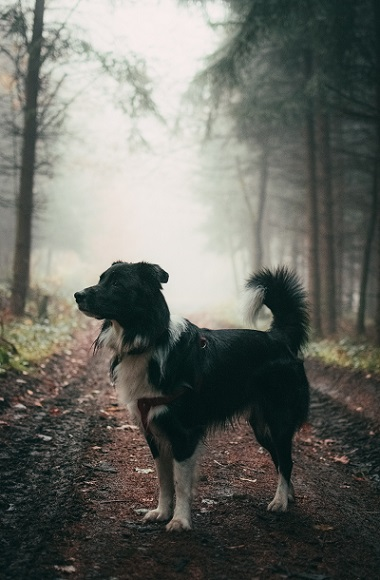
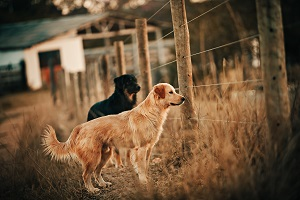
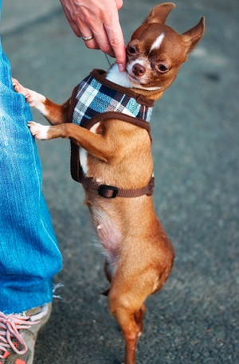
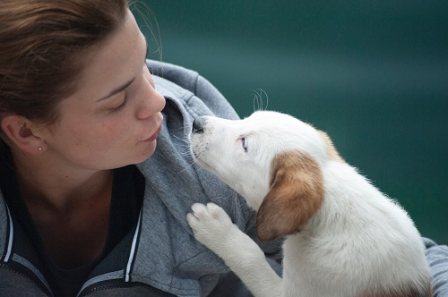
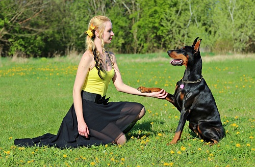
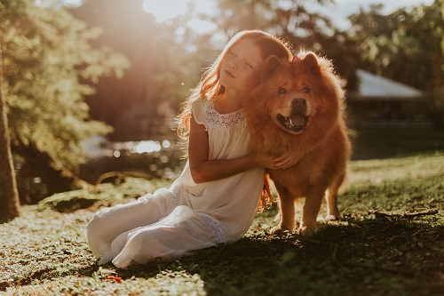
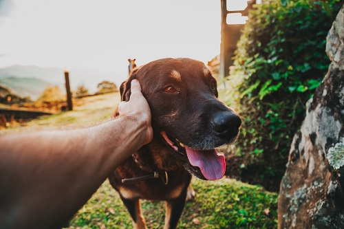
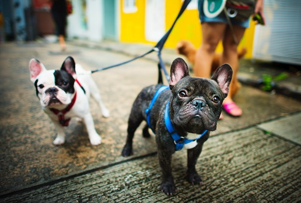

Tails
Tucked under:
Submissive/appeasing, deferent, or fearful
Low and still:
Calm, relaxed
Low to medium carriage, gently waving:
Relaxed, friendly
Low to medium carriage, fast wag:
Submissive/appeasing or happy, friendly
High carriage, still/vibrating or fast wag:
Tension, arousal, excitement; could be play arousal or aggression arousal
Hairs
Piloerection:
Also known as “raised hackles,” this is simply a sign of arousal. While it can indicate aggression, dogs may also show piloerection when they are fearful, uncertain, or engaged in excited play.
Body Posture
Behind vertical, lowered; hackles may be raised:
Could be submissive and/or appeasing or fearful
Vertical, full height:
Confident, relaxed
Ahead of vertical, standing tall; hackles may be raised:
Assertive, alert, excitement, arousal; could be play arousal or aggressive arousal
Shoulders lowered, hindquarters elevated:
A play bow is a clear invitation to play; the dog is sending a message that behavior that might otherwise look like aggression is intended in play.
-----------------------------------------------------------split line------------------------------------------------------------
Tips for human behaviour
Your ability to communicate appropriately back to your dog is every bit as important as your ability to read her communications. Making direct eye contact, bending forward from the waist, and reaching over the top of the head are some of the most common body language mistakes humans make with dogs.
Here are more appropriate ways to communicate your friendly intentions to the dog in front of you:
Eye Contact
In our culture, direct eye contact is admired. Someone who doesn't look you in the eye is perceived as shifty, untruthful, or weak. Though there are other cultures where this is not true, in this part of the world, we humans regard making direct eye contact as the right and honorable way to greet other sentient beings.
In a dog’s world, however, direct eye contact is a challenge or a threat, while looking away is a sign of deference, appeasement, or respect. If you make direct eye contact with a dog and see signs of appeasement, fear, deference, or defensive or offensive aggression, you know this is a dog who is not comfortable with direct eye contact. Experienced handlers approach dogs with soft eye contact or without making eye contact at all.
When approaching a dog you don’t know, or if your own dog seems wary of you when you approach her, try looking off to the side or over her head instead of directly into her eyes. If she seems comfortable, try making brief, soft eye contact and see how she reacts. If her body language stays soft and she continues to approach you, she is probably comfortable with at least some eye contact. Take it slow.
Hands
What’s the first thing you’re likely to do when you’re introduced to a human stranger? Reach out boldly and shake hands with a firm grip. What’s the first thing many humans are likely to do when they meet a dog? Reach out boldly and pat her on top of the head. Non-dog-savvy humans, that is. Many dogs hate being patted on top of the head, although some tolerate it; only a small minority may actually enjoy it.
If you want to make a good impression on the canines you meet, you might do best not to reach out at all. Rather, allow the dog to offer the first contact with you.
If you must reach toward a dog, offer your open hand, palm up, below her chin level, and let her reach forward to sniff. If she invites closer contact, try scratching gently under her chin or behind her ear – most dogs love that. Watch her response; she may not like touch, or she may not yet be ready for that much intimacy from a stranger. If she pulls away or shows signs of fear, appeasement, avoidance, or aggression, respect her message and stop trying to touch her.
Hugs
Even in the world of humans, you’d be offended if someone you didn’t know walked up and wrapped arms around you in an intimate hug. Lots of dogs are equally offended, even by hugs from someone they know well. Sure, there are dogs who invite hugs and snuggles, but they are the exception, not the rule.
Never try to hug a dog you don’t know (and don’t let your children do it, either!).
If you are in the habit of hugging (or allowing your children to hug) your own dog, video some hugs in action and take a good hard look at her body language. If your dog leans into the hugs with a relaxed body and soft expression, you’re on solid ground. In contrast, if you see your dog ducking, looking away, leaning away, tensing up, or offering other avoidance signals, you might want to rethink your hugging program.
Body Orientation
Remember that approach for greeting another human and shaking her hand? You probably stood tall and offered a full-frontal presentation at the same time; we humans would think it quite weird if someone crouched and/or sidled up to us to say hello.
However, to a dog, a face-front direct approach along with direct eye contact screams, “Threat!” Equally offensive to many dogs is the human habit of bending or hovering over a dog. If you watch a dog professional making the acquaintance of a new canine friend, you are likely to see her kneel sideways while avoiding eye contact, either keeping her hands close to her body or offering an open hand low to the ground.
Take your lead from professional trainers and handlers. The more wary of you the dog appears, the more important it is for you to turn sideways and make yourself small and non-threatening. Of course, if you're greeting an enthusiastic Labrador Retriever who is happily trying to body-slam you at the end of his leash, you’re probably safe to stand up and face front. But, still, no hugs, head-pats, or hovering, please.
Movement
Dogs, especially dogs who aren’t completely comfortable with humans, are very sensitive to our movement. Fast, sudden, and erratic movements can be alarming, especially if they are combined with direct eye contact and inappropriate hand-reaching. Slow, calm movement – or in some case no movement at all – is a better approach with a dog you don’t know.
Demeanor
Now here’s the tricky part. Often, when humans are trying to avoid eye contact, move slowly, speak softly, turn sideways, and control the movement of their hands, they end up looking tense and awkward. Or just plain weird. And that can be very alarming to a dog who isn’t sure about the approaching human – or humans in general.
To avoid this, video yourself with your own dog while you train yourself to control your eye contact, hands, and body postures. Practice until you can act natural while doing all the approach and greeting behaviors that feel very unnatural. Then ask your friends if you can try it with their dogs. Get really good at it before you try it with random dogs you meet in public. And always remember to ask the dog’s owner first for permission to greet – and respect their wishes if they hesitate or say no.